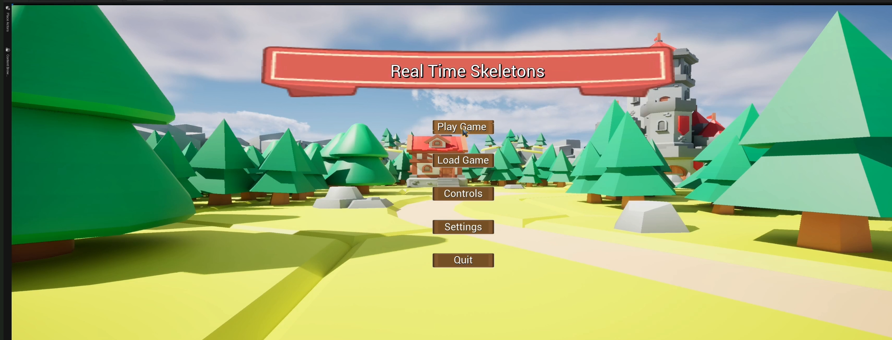

About
Real-Time-Skeletons is a real-time strategy prototype developed with two teammates over eight weeks. I was responsible for the user interface and main menu, and I implemented the base-building mechanics. The prototype was created in Unreal Engine 5 using Blueprints for rapid iteration. Development stopped after the course when the team moved on to other projects.
Project Info
- Role: Student Project
- Engine: Unreal Engine 5
- Duration: 8 Weeks
- Team Size: 3
Introduction
This project focused on core RTS systems: UI, base construction, unit control, and game flow. My contributions included the main menu, HUD layouts,Camera movement, and the base-building system used to place and manage structures. The project sources are not publicly available.
Features I implemented
Main menu
Designed and implemented the main menu flow, including start, options and quit actions. Menu layout and navigation were built in UMG (Unreal Motion Graphics) to provide fast access to settings and to bootstrap the game scene cleanly from an entry point.

User interface & HUD
Created HUD layouts and UI elements used during gameplay: resource displays, Building Heath, build/action buttons, and contextual prompts. The HUD was implemented in Blueprints and designed to scale with resolution and anchor correctly to screen edges.

Base-building system
Implemented the base-building mechanics that let players place and manage structures. The system includes a placement preview (ghost) to preview building position, placement validation to prevent invalid overlap, and basic structure selection/interaction. Core logic and UI integration were implemented with Blueprints for rapid iteration.

Camera movement
Implemented top-down camera controls for the RTS view. Controls include WASD / arrow-key panning, edge-screen scrolling, mouse-wheel zoom (with clamped min/max distances), and hold-drag pan with the middle mouse button. Movement is smoothed using interpolation and clamped to level bounds to prevent the camera leaving the playable area.
UX polish and feedback
Added visual feedback for placement validation and button states (enabled/disabled), and tuned UI spacing and typography to improve clarity during gameplay. These small UX touches make the base-building flow easier to understand and use.